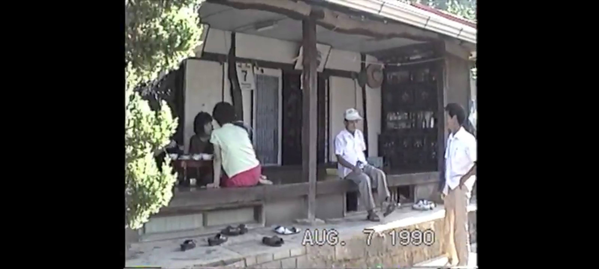
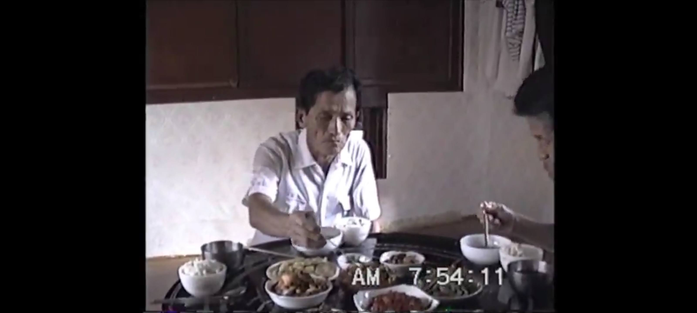

| Hardware - Software | Model No. | Function |
|---|---|---|
| Sony | DCR-TRV 520 | Render data stored in magnetic tape. Provide output at the iLink Port |
| FireWire | 4-Pin to 6-Pin Cable | carry digital data from the camera at 300 Mb/s per IEEE 1394a Standard |
| Mac Mini & iMovie | 2011 with Snow Leopard, iMovie '09 | Create a digital copy (*.dv) Create a Project in iMovie using (*.dv) files Convert the project data to MP4 (M4V) format |
| Cloud hosting and sharing service | Google Photo | Store video files and provide links |
One of the benefits of aging is the reserve of memory or remembrance.
Of times, places, and people.
Equally challenging is the effort required to keep up with and be current with the latest technology offerings that aides in that remembering.



Spent better part of last weekend transferring analog video images from over 30 years ago.
Viewed, edited and converted Video 8, Hi 8 and Digital 8 images using a Sony Video Camera1, a FireWire2 cable, a Mac Mini that included iMovie from a dozen years ago.
(See Section 7 for additional technical discussions.)
This was a technology equivalent of astronomical or stars aligning.
1 First Attempt
Initially, made the mistake of trying to enhance the footage by inserting a period music in the sound portion of the video.
It overshadowed the embedded, original audio. That audio was the element that listeners and viewers were interested in.
The benefit of the video, compared to still image, is the sound and the presence associated with the person.
Afterwards, the video was faithfully transferred without any modification or enhancements.
2 Initial Impressions
The finished product sounded and looked dated.
There is only so much that can be done with 200 lines of resolution and mono sound recording.
The intended audience was my father-in-laws’ descendants. He had 5 children and 15 grand children. (He passed away in 2008)
I didn’t expect much response or feedback, since it was meant for the immediate family of Hong Han Pyo and Whang Young Ja.
I was surprised to hear that many people were interested in viewing this footage.
Turns out my father-in-law had 10 siblings and his father’s brother had 7 children.
The response was overwhelmingly favorable.
3 The reason for the popularity3
Video contains ordinary, everyday events like family gathering, eating together, visits during holidays
However, hearing their familiar voices, tinged with local accent, is irreplaceable.
For it also contains images of members of the family that are no longer with us.
Ultimately, it is not necessarily the resolution presented on the screen or the sound quality produced by the speaker that matters.
It is memories that are triggered and the relationship we remember, when we see the electronic representation of them.
A remembrance of times and places that were slower and quieter.
4 Consumer vs. Producer
My father declared in his 50s
I am satisfied with what I have learned and remembered.
No longer need the latest offerings or trends.
His memory was nearly full – with analog recordings.4
There were times, during my 20s and 30s, when I paid attention to the advertisements for the latest offerings and compared my equipment against it.
Wondered how much better things would sound or more pleasing to the eye.
Recently, I have changed my thinking.
No longer looking for the latest and greatest.
Instead, I am more interested in identifying the lowest requirements that meet my needs.
Rather than owning items that are brighter, clearer, or louder than my neighbors.
5 Reflection of Life
Grateful that I can still hear (without hearing aides) the sound coming from mechanical vibration that is a transformation of electrical signal.
Also that I can still see (with corrective lens) and recognize images of loved ones from the past, when they were at their prime.
Grateful that those images and sound triggers longing for a home that no longer exist but one that can be built with loved ones.
The societies and companies will continue to move toward higher resolution and noiseless offerings that I can no longer distinguish and hear.
I will continue to invest in and enjoy the original recording without enhancements. For those recordings represent life – the one that I am familiar with.
[At times mistakes are made but we have the capacity and means to either accept the flaws or modify them as needed.]
I am looking forward to a time when digital things will be converted back to analog format, even with its shortcomings.5
Meanwhile,I will continue to work on the project of analog conversion, 12 tapes down and 70 more to go.
6 Further Reflections
It’s a wonder how people understand what I say. It is difficult to fully hear the sound. The communication is more than sound or just voice.
Viewing those videos and knowing what happened afterwards has been instructive. We live this life serially, with faith and reflect with a much better sense of meaning. Recall a quote,
if we knew beforehand what would happen, we would die due to too much happiness (or sadness)Many of the people in the videos were same age as my current age. I thought they were too old. They continue to live a productive life, 30 years later. And the young ones in the video are now starting their own family. The cycle continues.
7 Technical Discussion
This project took nearly a decade to complete
It is not because I didn’t have the desire or the knowledge.
Even though I had the desire, the hardware and software complexity along with its availability due to its age, made it challenging. For example , I was not looking forward to using 2 dongles to go from the Firewire to Thunderbolt 2 (MDP, Mini Display Port) to Thunderbolt 3 (USB-C).
A breakthrough was finding a Mac Mini (circa 2010) that had the right connection. See the table below
So the connection from the Sony Camera was just one cable. Plus the built in software was adequate for the transfer as well processing and conversion
My earlier efforts to digitize was minimally successful. It was a haphazard effort and I got frustrated and gave up when I ran into issues. But this time, I had the tools plus the combined knowledge base of YouTube with me.
Therefore I was able to overcome technical hurdles such as choosing the right firewire cable, sourcing the right software and hardware to process the DV files into MP4 files.
Footnotes
https://en.wikipedia.org/wiki/Handycam?oldformat=true↩︎
https://en.wikipedia.org/w/index.php?title=IEEE_1394&oldformat=true↩︎
Consumer video recording was not widely adopted in early 1990s, especially in Korea.↩︎
he left reels of recording and a reel-to-reel recorder that he purchased in Hong Kong back in 60s↩︎
2 main reasons are low resolution and real time conversion, 2 hour tape takes 2 hours to copy to the digital domain↩︎